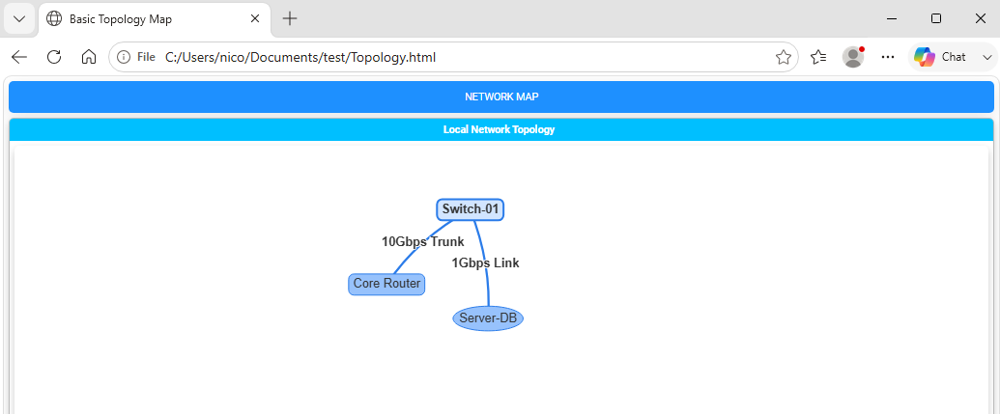
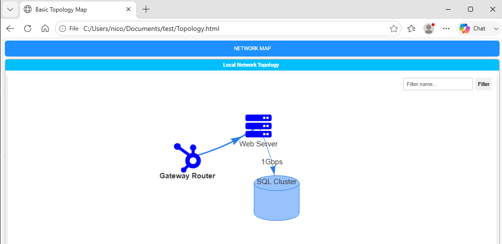
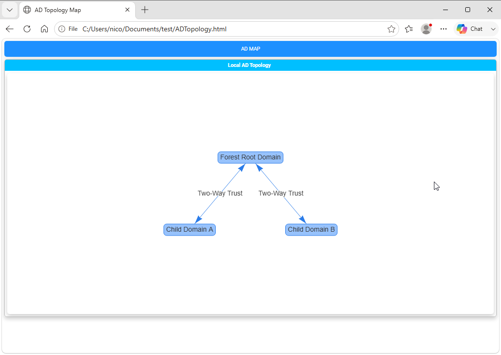
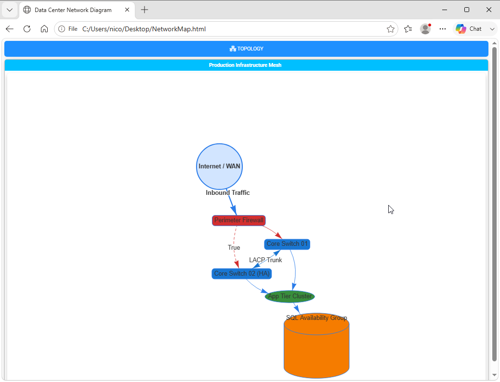

Chapter 7: Network Diagrams, Flowcharts, and Visualizations
Complex visualizations overview
Beyond tables and charts, complex IT environments frequently require structural visualization—such as Active Directory trust maps, network topology diagrams, cloud architecture maps, and organizational hierarchies.
PSWriteHTML includes native support for interactive diagramming powered by Vis Network through the New-HTMLDiagram
cmdlet. You can build nodes, connections, flowcharts, and relational graphs dynamically using pure PowerShell syntax without needing external
design tools like Visio or Lucidchart.
Core Diagram Concepts: Nodes and links (New-HTMLDiagram)
Diagrams in PSWriteHTML are constructed using two primary structural primitives inside a New-HTMLDiagram container:
Nodes (New-DiagramNode): Visual entities (e.g., servers, routers, switches, user accounts, cloud databases).
Links (New-DiagramLink): Directional or non-directional connection lines connecting two nodes (e.g., network cables, trust relationships, data flows).
Note
Links in some outdated diagramming libraries are called “edges” or “connections.” In PSWriteHTML, we use the term “links” to align with common
networking terminology. New-DiagramLink has many aliases: DiagramLink, DiagramEdge, DiagramEdges and New-DiagramEdge
for backward compatibility.
Basic Diagram Syntax
New-HTML -Title "Basic Topology Map" -FilePath "Topology.html" -Show {
New-HTMLTab -Name "Network Map" {
New-HTMLSection -HeaderText "Local Network Topology" {
New-HTMLPanel {
New-HTMLDiagram -Diagram {
# Define Nodes
New-DiagramNode -Id 1 -Label "Core Router" -Shape "box"
New-DiagramNode -Id 2 -Label "Switch-01" -Shape "box"
New-DiagramNode -Id 3 -Label "Server-DB" -Shape "ellipse"
# Define Connections (Links)
New-DiagramLink -From 1 -To 2 -Label "10Gbps Trunk"
New-DiagramLink -From 2 -To 3 -Label "1Gbps Link"
} -Height "500px"
}
}
}
}
This is the result, a simple network diagram with three nodes and two links, fully interactive with zooming, panning, and node dragging:

Fig. 20 A basic interactive diagram containing nodes and links.
Customizing Nodes (New-DiagramNode)
Nodes are defined with New-DiagramNode . They can be customized with specific shapes, background colors, font styles, and FontAwesome icons to represent specific hardware or service roles.
Node Parameters & Options
-Id: Unique identifier (integer or string) used to reference the node in link definitions. If not set, label will be used as Id.
-Label: Display text shown on or below the node.
-Shape: Geometry of the node (
circle,dot,diamond,ellipse,database,box,square,triangle,triangleDown,text,star,hexagon).-ColorBackground: Hex color code for the internal node fill.
-ColorBorder: Hex color code for the node outline.
-IconSolid / -IconBrands: Embeds a FontAwesome vector icon inside the node. Cannot be used with
-Shapevalues likeboxorellipse.
Customizing Connections (New-DiagramLink)
New-DiagramLink control how relationships between nodes are visualized, supporting directional arrows, line styling, color coding, and labels.
Link Customization Parameters
-From / -To: IDs of the source and target nodes.
-ArrowsToEnabled: Switch parameter to enable arrows at the end of the link.
-ArrowsToType: Type of arrowhead to display at the end of the link. Valid values are ‘arrow’, ‘bar’, or ‘circle’.
-Color: Hex color code for the connection line.
-Dashed: Boolean (
$true/$false) to switch between solid and dashed lines (ideal for backup links or optional paths).-Label: Text annotation displayed along the link line.
Directional & Dashed Link Example
New-DiagramLink -From "Firewall" -To "DMZ-Host" -ArrowsToEnabled -Color "#E53935" -Label "HTTPS (443)"
New-DiagramLink -From "DMZ-Host" -To "Backup-Srv" -ArrowsToEnabled -Dashed $true -Color "#757575" -Label "Replication"
Node Icon & Color Example
A simple workflow diagram with three nodes and two directional links, fully interactive with customized icons, colors, and labels:
New-HTML -Title "Basic Topology Map" -FilePath "Topology.html" -Show {
New-HTMLTab -Name "Network Map" {
New-HTMLSection -HeaderText "Local Network Topology" {
New-HTMLPanel {
New-HTMLDiagram -EnableFiltering -EnableFilteringButton -Diagram {
New-DiagramOptionsInteraction -Hover $true
# Define Nodes
#New-DiagramNode -Id 1 -Label "Core Router" -IconSolid broadcast-tower
New-DiagramNode -Id "GW" -Label "Gateway Router" -IconBrands hubspot -IconColor Blue
New-DiagramNode -Id "DB" -Label "SQL Cluster" -Shape database
New-DiagramNode -Id "WEB" -Label "Web Server" -IconSolid server -IconColor Blue
# Define Connections (Edges)
New-DiagramEdge -From "GW" -To "WEB" -ArrowsToEnabled
New-DiagramEdge -From "WEB" -To "DB" -Label "1Gbps" -ArrowsToEnabled
} -Height "500px"
}
}
}
}
This is the result:

Fig. 21 A directional network diagram with customized nodes and links.
Layout Hierarchies & Physics Engines (New-DiagramOptionsLayout)
Vis Network includes physics engines that automatically arrange nodes dynamically or snap them into rigid hierarchical trees.
Hierarchical Layouts (Org Charts & Tree Diagrams)
For structured trees like Active Directory domain trust structures or organizational charts, enable hierarchical positioning using New-DiagramOptionsLayout :
-HierarchicalEnabled: Switch parameter to enable hierarchical layout.
-HierarchicalDirection: The direction of the hierarchical layout. Valid values are: FromUpToDown, FromDownToUp, FromLeftToRight, FromRigthToLeft.
New-HTML -Title "AD Topology Map" -FilePath "ADTopology.html" -Show {
New-HTMLTab -Name "AD Map" {
New-HTMLSection -HeaderText "Local AD Topology" {
New-HTMLPanel {
New-HTMLDiagram -Diagram {
# Layout Engine Configuration
New-DiagramOptionsLayout -HierarchicalEnabled $true -HierarchicalDirection FromUpToDown
New-DiagramNode -Id 1 -Level 1 -Label "Forest Root Domain" -Shape "box"
New-DiagramNode -Id 2 -Level 2 -Label "Child Domain A" -Shape "box"
New-DiagramNode -Id 3 -Level 2 -Label "Child Domain B" -Shape "box"
New-DiagramLink -From 1 -To 2 -ArrowsToEnabled -ArrowsFromEnabled -Label "Two-Way Trust"
New-DiagramLink -From 1 -To 3 -ArrowsToEnabled -ArrowsFromEnabled -Label "Two-Way Trust"
} -Height "500px"
}
}
}
}
This is the result:

Fig. 22 An Active Directory topology diagram using a hierarchical layout.
Complete Practical Example: Infrastructure Network Topology Map
The following script gathers network interface data and constructs a multi-tier network map complete with interactive node dragging, zooming, directional paths, and FontAwesome status indicators:
New-HTML -Title "Data Center Network Diagram" -FilePath "$env:USERPROFILE\Desktop\NetworkMap.html" -Show {
New-HTMLTab -Name "Topology" -IconSolid "network-wired" {
New-HTMLSection -HeaderText "Production Infrastructure Mesh" {
New-HTMLPanel {
New-HTMLDiagram -Diagram {
# 1. External & Perimeter Layer
New-DiagramNode -Id "INET" -Label "Internet / WAN" -Shape "circle" -ColorBackground "#0288D1"
New-DiagramNode -Id "FW01" -Label "Perimeter Firewall" -Shape "box" -ColorBackground "#D32F2F"
# 2. Distribution Layer
New-DiagramNode -Id "SW01" -Label "Core Switch 01" -Shape "box" -ColorBackground "#1976D2"
New-DiagramNode -Id "SW02" -Label "Core Switch 02 (HA)" -Shape "box" -ColorBackground "#1976D2"
# 3. Workload Layer
New-DiagramNode -Id "APP" -Label "App Tier Cluster" -Shape "ellipse" -ColorBackground "#388E3C"
New-DiagramNode -Id "DB" -Label "SQL Availability Group" -Shape "database" -ColorBackground "#F57C00"
# 4. Define Interconnects
New-DiagramLink -From "INET" -To "FW01" -ArrowsToEnabled -Label "Inbound Traffic"
New-DiagramLink -From "FW01" -To "SW01" -ArrowsToEnabled -Color "#D32F2F"
New-DiagramLink -From "FW01" -To "SW02" -ArrowsToEnabled -Color "#D32F2F" -Dashes $true
# Core Switch Trunking
New-DiagramLink -From "SW01" -To "SW02" -ArrowsToEnabled -ArrowsFromEnabled -Label "LACP Trunk" -Color "#1976D2"
# App & DB Connects
New-DiagramLink -From "SW01" -To "APP" -ArrowsToEnabled
New-DiagramLink -From "SW02" -To "APP" -ArrowsToEnabled
New-DiagramLink -From "APP" -To "DB" -ArrowsToEnabled -Label "Port 1433"
} -Height "650px"
}
}
}
}
This is the result:

Fig. 23 An infrastructure network topology map with directional paths and status icons.
Diagramming Best Practices
Explicit Heights: Always set a explicit
-Heightparameter (e.g.,"500px"or"700px") onNew-HTMLDiagramto prevent canvas collapse inside panels.Unique Node IDs: Ensure every node has a strictly unique
-Idstring or integer. Duplicate IDs cause link routing failures in Vis.js.Use Hierarchy for Trees: When displaying parent-child structures (such as management org charts or DNS delegation trees), always enable
New-DiagramOptionsLayout -HierarchicalEnabled $trueto prevent nodes from drifting into floating physics clusters.
Next Chapter: Chapter 8: Custom Styling, CSS, and Themes